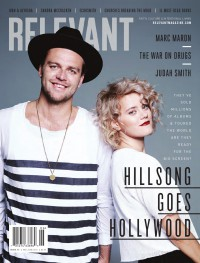
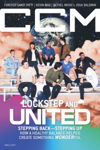

Hillsong United
 February 2011 CCM Digital |
 May 2015 Relevant |
 15 June 2017 CCM Digital |
Media coverage:
- Sep 2005 in Relevant "United They Stand", by Darren Philip
- Aug 2007 in CCM "The Art of Revolution", by Rachel Harrold
- Feb 2008 in CCM "Faith on the Move: Hillsong United", by Caroline Lusk
- Jan 2010 in Charisma "Global Troubadours"
- Jan 2011 in Relevant "How A Local Phenomenon Became A Global Movement... Without Losing Its Roots", by Adam Smith
- Feb 2011 in CCM Digital "Hillsong United and the Aftermath: God Right Here, Right Now", by Caroline Lusk
- Mar 2013 in Relevant "The QA: Joel Houston"
- Mar 2013 in CCM Digital "Worship: Here and Now", by Grace S. Aspinwall
- Aug 2013 in Charisma "Inform: Aussie Invasion Continues in U.S. with Musical Missionaries", by Peter K. Johnson
- Sep 2013 in Relevant "Hillsong United", by Matt Conner
- Nov 2013 in Worship Leader "Music Insider: The Church I See"
- Jan 2015 in Worship Leader "Leadership: Let Hope Rise: Hillsong Brings Ministry to the Multiplex", by Davin Seay
- Mar 2015 in Relevant "Slices: Hillsong United: Coming to a Theater Near You"
- May 2015 in Relevant "Lights. Camera. Direction.", by Tyler Huckabee
- 15 Jun 2015 in CCM Digital "Building Upside Down Kingdoms", by Andrew Greer
- Nov 2016 in Relevant "The Drop: Conversation: Joel Houston on Hillsong United"
- 15 Jun 2017 in CCM Digital "Right In Step", by Kevin Sparkman
- May 2019 in Relevant "Hillsong United", by Jesse Carey
Albums & reviews:
1999: Everyday
2000: Best Friend
2002: King of Majesty
- May 2002 in CBA Marketplace, by Rhonda Owens
- Jul 2002 in Worship Leader, by Terry Scott Taylor
2003: To the Ends of the Earth
- May 2003 in Worship Leader, by Jessica Ludwig
- Aug 2003 in Charisma & Christian Life, by Margaret Feinberg
- Sep 2003 in YouthWorker, by Dave Urbanski
2004: More Than Life
- May 2004 in Charisma & Christian Life, by Natalie Nichols Gillespie
- May 2004 in Worship Leader, by Chet Benton
2005: Look to You
- May 2005 in Worship Leader
- Jul 2005 in Relevant, by Won Kim
- Jul 2005 in Charisma & Christian Life, by DeWayne Hamby
2006: United We Stand
- May 2006 in Worship Leader
- Jun 2006 in Charisma & Christian Life, by Trace N. Mason
2008: The I Heart Revolution: With Hearts as One
- Apr 2008 in CCM, by Andree Farias
- Jul 2008 in YouthWorker, by Andree Farias
- Jul 2008 in Worship Leader
2009: Across the Earth: Tear Down the Walls
- Jun 2009 in Worship Leader
- Jul 2009 in Relevant
- Aug 2009 in Charisma & Christian Life, by Leigh Devore
- Sep 2009 in YouthWorker, by Andrew Greer
- Nov 2009 in Christian Single, by Christina A. Banister
2011: Aftermath
- Feb 2011 in CCM Digital, by Matt Conner
- Mar 2011 in Worship Leader, by Jeremy Armstrong
- Mar 2011 in Relevant
- Apr 2011 in Neue
- May 2011 in YouthWorker, by Matt Conner
2013: Zion
- Feb 2013 in Charisma, by DeWayne Hamby
- Mar 2013 in Worship Leader, by Andrea Hunter
- Mar 2013 in CCM Digital, by Matt Conner
- May 2013 in HM, by David Stagg
2013: Live in Miami [video]
2014: The White Album (Remix Project)
- May 2014 in Relevant
- May 2014 in Worship Leader, by Randy Cross
2016: Of Dirt and Grace
- 1 Aug 2016 in CCM Digital, by Matt Conner
- Sep 2016 in Relevant
- Sep 2016 in Worship Leader, by Jeremy Armstrong
2016: Let Hope Rise
- 1 Sep 2016 in CCM Digital, by Matt Conner
- Jan 2017 in Charisma, by Jessilyn Justice
2018: PEOPLE
2019: People (Live)
2020: People (Deluxe/Live In Sydney, Australia)
2021: The People Tour: Live from Madison Square Garden
2022: Are We There Yet?
Award Summary (Nominations / Wins)
Dove Awards- 2008 Dove Awards
- Group of the Year
- Praise & Worship Album: All of the Above
- Spanish Language Album: Con Todo
- Praise & Worship Album: Aftermath
- Long Form Music Video: Live in Miami [video]
- Song: "Oceans (Where Feet May Fail)"
- Artist
- Pop/Contemporary Recorded Song: "Oceans (Where Feet May Fail)"
- Worship Song: "Oceans (Where Feet May Fail)"
- Contemporary Christian Performance: "Oceans (Where Feet May Fail)"
- Pop/Contemporary Recorded Song: "Touch The Sky"
- Contemporary Christian Artist
- Pop/Contemporary Album: Empires
- Artist
- Recorded Music Packaging: Empires
- Worship Album: Empires
- Artist
- Long Form Music Video: Of Dirt and Grace
- Song: "So Will I (100 Billion X)"
- Pop/Contemporary Album: Wonder
- Artist
- Worship Song: "So Will I (100 Billion X)"
- Worship Recorded Song: "So Will I (100 Billion X)"
- Artist
- Long Form Music Video: People (Live)
- Worship Album: PEOPLE
- Contemporary Christian Artist
- Worship Album: People (Deluxe/Live In Sydney, Australia)
- Contemporary Christian Artist
- Song: "Another In The Fire"
- Long Form Music Video: The People Tour: Live from Madison Square Garden
- Worship Album: The People Tour: Live from Madison Square Garden
- Contemporary Christian Artist
- Worship Album: Are We There Yet?
- Worship Recorded Song: "Know You Will"
- Short Form Music Video (Concept): "Sure Thing"
© 2011 CMnexus. Last updated May 2025. Contact: editor -AT- cmnexus -DØT- org